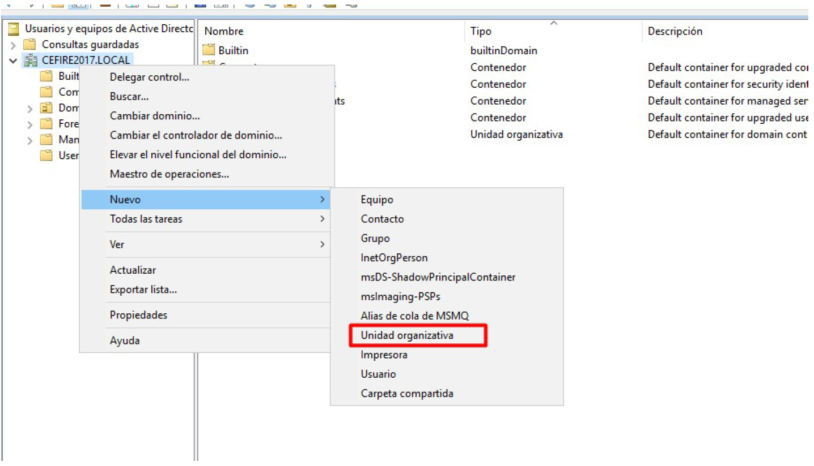
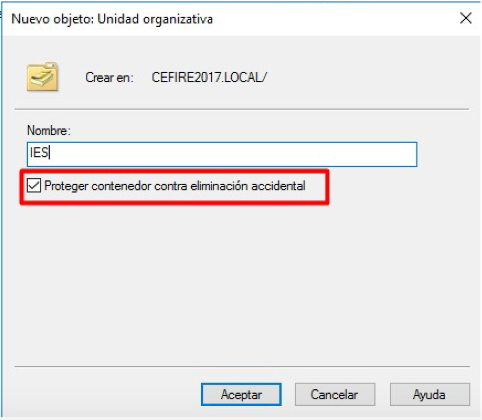
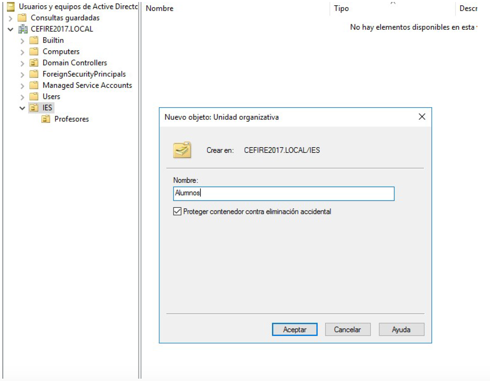

Práctica: Gestión de Grupos y Unidades Organizativas en Active Directory¶
Objetivos¶
Durante esta práctica aprenderás a gestionar grupos, unidades organizativas y usuarios en Active Directory Domain Services para una organización empresarial. Esta práctica complementa la PR402 y te permitirá trabajar con estructuras organizativas más complejas, creación masiva de usuarios y organización jerárquica del directorio.
Al finalizar esta práctica serás capaz de:
- Crear unidades organizativas para estructurar el dominio.
- Crear usuarios del dominio con diferentes roles y responsabilidades.
- Crear y gestionar grupos de seguridad para diferentes departamentos.
- Organizar usuarios y grupos en unidades organizativas.
- Crear usuarios masivamente desde CSV usando PowerShell.
- Eliminar usuarios de prueba de forma segura.
- Documentar la estructura organizativa del dominio.
Contexto: Area Studio¶
Siguiendo con la configuración del Active Directory para Area Studio, una empresa que necesita organizar su estructura de usuarios y grupos por departamentos. Debes crear una estructura que refleje la organización de la empresa con sus responsables de departamento.
Tareas a realizar¶
-
Creación de estructura organizativa: - Crea unidades organizativas para los diferentes departamentos. - Organiza usuarios y grupos dentro de las unidades organizativas apropiadas.
-
Creación de usuarios de departamento: - Crea usuarios para los responsables de departamento de Area Studio. - Configura las cuentas con las contraseñas y propiedades apropiadas.
-
Creación y gestión de grupos: - Crea grupos de seguridad para cada departamento. - Añade usuarios a los grupos correspondientes.
-
Limpieza de usuarios de prueba: - Elimina los usuarios de prueba creados en prácticas anteriores.
-
Documentación: - Documenta la estructura organizativa creada. - Explica la jerarquía de unidades organizativas, grupos y usuarios.
Entregables¶
Para la entrega de esta práctica, deberás proporcionar:
-
Documentación: - Documento en Markdown con:
- Descripción de la estructura organizativa creada.
- Diagrama o esquema de las unidades organizativas y su jerarquía.
- Pasos seguidos para la creación de usuarios, grupos y unidades organizativas.
- Capturas de pantalla del proceso completo.
- Explicación de la organización y su justificación.
-
Evidencias: - Las capturas de pantalla deben mostrar:
- Creación de unidades organizativas.
- Creación de usuarios de departamento.
- Creación de grupos de departamento.
- Organización de usuarios y grupos en unidades organizativas.
- Eliminación de usuarios de prueba.
- Estructura final del directorio.
Requisitos previos¶
Antes de comenzar, asegúrate de tener completada la PR402 o tener:
- Un dominio de Active Directory configurado y funcionando.
- Acceso RDP al controlador de dominio con credenciales de administrador.
- Usuarios de prueba creados en prácticas anteriores (usuario1, usuario2).
- Conocimiento básico de usuarios, grupos y unidades organizativas en Active Directory.
Nota importante
Esta práctica asume que ya tienes un dominio de Active Directory configurado y usuarios de prueba creados. Si no los tienes, completa primero la PR401 y PR402.
Introducción¶
¿Por qué organizar el directorio?¶
La organización eficiente del directorio de Active Directory es fundamental para:
- Reflejar la estructura organizativa de la empresa.
- Facilitar la administración mediante agrupaciones lógicas.
- Aplicar políticas de grupo de forma selectiva por departamento.
- Simplificar la delegación de permisos administrativos.
- Mejorar la seguridad mediante una organización clara.
Herramientas de administración¶
Para administrar unidades organizativas, usuarios y grupos utilizaremos:
- Usuarios y equipos de Active Directory (dsa.msc): Herramienta gráfica principal.
- PowerShell: Para tareas masivas y automatización (creación desde CSV).
Recursos de apoyo
Paso 1: Crear unidades organizativas¶
Las unidades organizativas (OU) nos permiten organizar los objetos del dominio de forma jerárquica, reflejando la estructura de la empresa.
1. Crear unidades organizativas mediante interfaz gráfica¶
- Conecta mediante RDP a tu controlador de dominio.
- Abre "Usuarios y equipos de Active Directory" desde el Panel del Administrador → Herramientas.
- Expande tu dominio (ej:
empresa.local). - Haz clic con el botón derecho sobre el dominio.
- Selecciona "Nuevo" → "Unidad Organizativa".

- Introduce el nombre de la unidad organizativa (ej:
Departamentos). - Haz clic en "Aceptar".

- Crea las siguientes unidades organizativas dentro de
Departamentos: -Gerencia-IT-Administracion-Comercial-RRHH

2. Crear unidades organizativas mediante PowerShell¶
También puedes crear unidades organizativas usando PowerShell:
# Importar el módulo de Active Directory
Import-Module ActiveDirectory
# Crear la unidad organizativa principal
New-ADOrganizationalUnit -Name "Departamentos" -Path "DC=empresa,DC=local"
# Crear unidades organizativas de departamentos
New-ADOrganizationalUnit -Name "Gerencia" -Path "OU=Departamentos,DC=empresa,DC=local"
New-ADOrganizationalUnit -Name "IT" -Path "OU=Departamentos,DC=empresa,DC=local"
New-ADOrganizationalUnit -Name "Administracion" -Path "OU=Departamentos,DC=empresa,DC=local"
New-ADOrganizationalUnit -Name "Comercial" -Path "OU=Departamentos,DC=empresa,DC=local"
New-ADOrganizationalUnit -Name "RRHH" -Path "OU=Departamentos,DC=empresa,DC=local"
Nota sobre el Path
Ajusta el Path según el nombre de tu dominio. Si tu dominio es aso.com, usa DC=aso,DC=com.
Paso 2: Crear usuarios de departamento¶
Debes crear usuarios para los responsables de departamento de Area Studio según la siguiente tabla:
| Nombre | Apellido | Inicio de sesión | Posición | Contraseña |
|---|---|---|---|---|
| Eduard | Casavella | eduard.casavella | Gerente | casavella1 |
| Pep | Terrón | pep.terron | Responsable IT | terron1 |
| Fran | Delgado | fran.delgado | Administración | delgado1 |
| Marcos | Sabates | marcos.sabates | Comercial | sabates1 |
| Irene | Masot | irene.masot | RR HH | masot1 |
1. Crear usuarios mediante interfaz gráfica¶
- Navega a la unidad organizativa correspondiente (ej:
Gerenciapara Eduard Casavella). - Haz clic con el botón derecho sobre la OU → "Nuevo" → "Usuario".
- Completa el asistente con los datos del usuario:
- Nombre:
Eduard - Iniciales: (opcional)
- Apellidos:
Casavella - Nombre de inicio de sesión de usuario:
eduard.casavella
- Configura la contraseña:
casavella1 - Desmarca "El usuario debe cambiar la contraseña en el siguiente inicio de sesión".
- Marca "La contraseña nunca expira" (solo para prácticas).
- Repite el proceso para cada usuario en su unidad organizativa correspondiente.
2. Crear usuarios mediante PowerShell (método individual)¶
También puedes crear usuarios usando PowerShell:
# Importar el módulo de Active Directory
Import-Module ActiveDirectory
# Crear usuario Eduard Casavella (Gerencia)
$password1 = ConvertTo-SecureString "casavella1" -AsPlainText -Force
New-ADUser -Name "Eduard Casavella" `
-GivenName "Eduard" `
-Surname "Casavella" `
-SamAccountName "eduard.casavella" `
-UserPrincipalName "eduard.casavella@empresa.local" `
-Path "OU=Gerencia,OU=Departamentos,DC=empresa,DC=local" `
-AccountPassword $password1 `
-PasswordNeverExpires $true `
-Enabled $true
# Crear usuario Pep Terrón (IT)
$password2 = ConvertTo-SecureString "terron1" -AsPlainText -Force
New-ADUser -Name "Pep Terrón" `
-GivenName "Pep" `
-Surname "Terrón" `
-SamAccountName "pep.terron" `
-UserPrincipalName "pep.terron@empresa.local" `
-Path "OU=IT,OU=Departamentos,DC=empresa,DC=local" `
-AccountPassword $password2 `
-PasswordNeverExpires $true `
-Enabled $true
# Crear usuario Fran Delgado (Administración)
$password3 = ConvertTo-SecureString "delgado1" -AsPlainText -Force
New-ADUser -Name "Fran Delgado" `
-GivenName "Fran" `
-Surname "Delgado" `
-SamAccountName "fran.delgado" `
-UserPrincipalName "fran.delgado@empresa.local" `
-Path "OU=Administracion,OU=Departamentos,DC=empresa,DC=local" `
-AccountPassword $password3 `
-PasswordNeverExpires $true `
-Enabled $true
# Crear usuario Marcos Sabates (Comercial)
$password4 = ConvertTo-SecureString "sabates1" -AsPlainText -Force
New-ADUser -Name "Marcos Sabates" `
-GivenName "Marcos" `
-Surname "Sabates" `
-SamAccountName "marcos.sabates" `
-UserPrincipalName "marcos.sabates@empresa.local" `
-Path "OU=Comercial,OU=Departamentos,DC=empresa,DC=local" `
-AccountPassword $password4 `
-PasswordNeverExpires $true `
-Enabled $true
# Crear usuario Irene Masot (RRHH)
$password5 = ConvertTo-SecureString "masot1" -AsPlainText -Force
New-ADUser -Name "Irene Masot" `
-GivenName "Irene" `
-Surname "Masot" `
-SamAccountName "irene.masot" `
-UserPrincipalName "irene.masot@empresa.local" `
-Path "OU=RRHH,OU=Departamentos,DC=empresa,DC=local" `
-AccountPassword $password5 `
-PasswordNeverExpires $true `
-Enabled $true
3. Crear usuarios masivamente desde CSV¶
Para crear múltiples usuarios de forma eficiente, puedes usar un archivo CSV y PowerShell:
Paso 1: Crear el archivo CSV¶
Crea un archivo llamado usuarios.csv con el siguiente contenido:
Nombre,Apellido,InicioSesion,Posicion,Contraseña,OU
Eduard,Casavella,eduard.casavella,Gerente,casavella1,Gerencia
Pep,Terrón,pep.terron,Responsable IT,terron1,IT
Fran,Delgado,fran.delgado,Administración,delgado1,Administracion
Marcos,Sabates,marcos.sabates,Comercial,sabates1,Comercial
Irene,Masot,irene.masot,RR HH,masot1,RRHH
Guarda el archivo en una ubicación accesible (ej: C:\Scripts\usuarios.csv).
Paso 2: Script de PowerShell para importar desde CSV¶
Crea y ejecuta el siguiente script de PowerShell:
# Importar el módulo de Active Directory
Import-Module ActiveDirectory
# Definir el dominio (ajusta según tu dominio)
$domain = "empresa.local"
$domainDN = "DC=empresa,DC=local"
$baseOU = "OU=Departamentos,$domainDN"
# Leer el archivo CSV
$usuarios = Import-Csv -Path "C:\Scripts\usuarios.csv" -Encoding UTF8
# Crear cada usuario
foreach ($usuario in $usuarios) {
# Convertir la contraseña a SecureString
$password = ConvertTo-SecureString $usuario.Contraseña -AsPlainText -Force
# Construir el path de la OU
$ouPath = "OU=$($usuario.OU),$baseOU"
# Crear el usuario
try {
New-ADUser -Name "$($usuario.Nombre) $($usuario.Apellido)" `
-GivenName $usuario.Nombre `
-Surname $usuario.Apellido `
-SamAccountName $usuario.InicioSesion `
-UserPrincipalName "$($usuario.InicioSesion)@$domain" `
-Path $ouPath `
-AccountPassword $password `
-PasswordNeverExpires $true `
-Enabled $true `
-Description $usuario.Posicion
Write-Host "Usuario $($usuario.InicioSesion) creado correctamente en $ouPath" -ForegroundColor Green
}
catch {
Write-Host "Error al crear usuario $($usuario.InicioSesion): $_" -ForegroundColor Red
}
}
Write-Host "Proceso de creación de usuarios completado." -ForegroundColor Cyan
Personalización del script
- Ajusta la ruta del CSV según donde guardes el archivo.
- Modifica
$domainy$domainDNsegún tu dominio. - Si necesitas añadir más campos (email, teléfono, etc.), añádelos al CSV y al comando
New-ADUser.
Paso 3: Verificar usuarios creados¶
Verifica que todos los usuarios se crearon correctamente:
# Listar todos los usuarios creados
$usuarios = Import-Csv -Path "C:\Scripts\usuarios.csv"
foreach ($usuario in $usuarios) {
$adUser = Get-ADUser -Identity $usuario.InicioSesion -Properties *
Write-Host "$($adUser.Name) - $($adUser.DistinguishedName)" -ForegroundColor Yellow
}
Paso 3: Crear grupos de departamento¶
Crea grupos de seguridad para cada departamento y añade los usuarios correspondientes.
1. Crear grupos mediante interfaz gráfica¶
- Navega a la unidad organizativa del departamento (ej:
IT). - Haz clic con el botón derecho sobre la OU → "Nuevo" → "Grupo".
- Configura el grupo:
- Nombre del grupo:
IT_Usuarios(o similar) - Ámbito del grupo: Global
- Tipo de grupo: Seguridad
- Haz clic en "Aceptar".
- Repite el proceso para cada departamento.
2. Añadir usuarios a grupos¶
- Selecciona el grupo creado.
- Haz clic con el botón derecho → "Propiedades".
- Ve a la pestaña "Miembros".
- Haz clic en "Agregar".
- Busca y añade el usuario correspondiente al departamento.
3. Crear grupos mediante PowerShell¶
También puedes crear grupos y añadir usuarios usando PowerShell:
# Importar el módulo de Active Directory
Import-Module ActiveDirectory
# Crear grupos para cada departamento
New-ADGroup -Name "Gerencia_Usuarios" `
-GroupScope Global `
-GroupCategory Security `
-Path "OU=Gerencia,OU=Departamentos,DC=empresa,DC=local"
New-ADGroup -Name "IT_Usuarios" `
-GroupScope Global `
-GroupCategory Security `
-Path "OU=IT,OU=Departamentos,DC=empresa,DC=local"
New-ADGroup -Name "Administracion_Usuarios" `
-GroupScope Global `
-GroupCategory Security `
-Path "OU=Administracion,OU=Departamentos,DC=empresa,DC=local"
New-ADGroup -Name "Comercial_Usuarios" `
-GroupScope Global `
-GroupCategory Security `
-Path "OU=Comercial,OU=Departamentos,DC=empresa,DC=local"
New-ADGroup -Name "RRHH_Usuarios" `
-GroupScope Global `
-GroupCategory Security `
-Path "OU=RRHH,OU=Departamentos,DC=empresa,DC=local"
# Añadir usuarios a sus grupos correspondientes
Add-ADGroupMember -Identity "Gerencia_Usuarios" -Members "eduard.casavella"
Add-ADGroupMember -Identity "IT_Usuarios" -Members "pep.terron"
Add-ADGroupMember -Identity "Administracion_Usuarios" -Members "fran.delgado"
Add-ADGroupMember -Identity "Comercial_Usuarios" -Members "marcos.sabates"
Add-ADGroupMember -Identity "RRHH_Usuarios" -Members "irene.masot"
Paso 4: Eliminar usuarios de prueba¶
Elimina los usuarios de prueba (usuario1 y usuario2) creados en prácticas anteriores.
Importante sobre la eliminación
Recuerda que al eliminar un usuario, se pierde su SID y no se pueden recuperar los permisos. Asegúrate de que estos usuarios no son necesarios antes de eliminarlos.
1. Eliminar usuarios mediante interfaz gráfica¶
- Abre "Usuarios y equipos de Active Directory".
- Navega a "Users" o a la OU donde están los usuarios de prueba.
- Selecciona el usuario
usuario1. - Haz clic con el botón derecho → "Eliminar".
- Confirma la eliminación.
- Repite el proceso para
usuario2.
2. Eliminar usuarios mediante PowerShell¶
También puedes eliminar usuarios usando PowerShell:
# Importar el módulo de Active Directory
Import-Module ActiveDirectory
# Eliminar usuarios de prueba
Remove-ADUser -Identity "usuario1" -Confirm:$false
Remove-ADUser -Identity "usuario2" -Confirm:$false
# Verificar que se eliminaron
Get-ADUser -Filter {SamAccountName -eq "usuario1"} # No debe devolver nada
Get-ADUser -Filter {SamAccountName -eq "usuario2"} # No debe devolver nada
Alternativa: Deshabilitar en lugar de eliminar
Si prefieres mantener los usuarios pero deshabilitarlos, puedes usar:
Disable-ADAccount -Identity "usuario1"
Disable-ADAccount -Identity "usuario2"
Paso 5: Verificar la estructura organizativa¶
Verifica que toda la estructura está correctamente organizada.
1. Verificar mediante interfaz gráfica¶
- Abre "Usuarios y equipos de Active Directory".
- Expande el dominio y las unidades organizativas.
- Verifica que:
- Las unidades organizativas están creadas correctamente.
- Los usuarios están en sus unidades organizativas correspondientes.
- Los grupos están creados y tienen los miembros correctos.
- Los usuarios de prueba han sido eliminados.
2. Verificar mediante PowerShell¶
Ejecuta los siguientes comandos para verificar la estructura:
# Importar el módulo de Active Directory
Import-Module ActiveDirectory
# Listar todas las unidades organizativas
Get-ADOrganizationalUnit -Filter * | Select-Object Name, DistinguishedName | Format-Table
# Listar usuarios por OU
Get-ADUser -Filter * -SearchBase "OU=Gerencia,OU=Departamentos,DC=empresa,DC=local" | Select-Object Name, SamAccountName
Get-ADUser -Filter * -SearchBase "OU=IT,OU=Departamentos,DC=empresa,DC=local" | Select-Object Name, SamAccountName
Get-ADUser -Filter * -SearchBase "OU=Administracion,OU=Departamentos,DC=empresa,DC=local" | Select-Object Name, SamAccountName
Get-ADUser -Filter * -SearchBase "OU=Comercial,OU=Departamentos,DC=empresa,DC=local" | Select-Object Name, SamAccountName
Get-ADUser -Filter * -SearchBase "OU=RRHH,OU=Departamentos,DC=empresa,DC=local" | Select-Object Name, SamAccountName
# Listar grupos y sus miembros
Get-ADGroup -Filter * -SearchBase "OU=Departamentos,DC=empresa,DC=local" | ForEach-Object {
Write-Host "Grupo: $($_.Name)" -ForegroundColor Cyan
Get-ADGroupMember -Identity $_.Name | Select-Object Name, SamAccountName | Format-Table
Write-Host ""
}
# Verificar que los usuarios de prueba fueron eliminados
$usuariosPrueba = Get-ADUser -Filter {SamAccountName -like "usuario*"} -ErrorAction SilentlyContinue
if ($usuariosPrueba) {
Write-Host "ADVERTENCIA: Aún existen usuarios de prueba" -ForegroundColor Yellow
$usuariosPrueba | Select-Object Name, SamAccountName
} else {
Write-Host "OK: Los usuarios de prueba han sido eliminados" -ForegroundColor Green
}
Tareas a realizar¶
- Creación de estructura organizativa:
- Crea la unidad organizativa principal
Departamentos. - Crea unidades organizativas para cada departamento (Gerencia, IT, Administración, Comercial, RRHH).
- Creación de usuarios de departamento:
- Crea los 5 usuarios según la tabla proporcionada.
- Coloca cada usuario en su unidad organizativa correspondiente.
- Configura las contraseñas según la tabla.
- Creación y gestión de grupos:
- Crea un grupo de seguridad para cada departamento.
- Añade el usuario correspondiente a cada grupo.
- Limpieza de usuarios de prueba:
- Elimina los usuarios
usuario1yusuario2creados en prácticas anteriores.
- Documentación:
- Crea un documento que explique:
- La estructura organizativa creada.
- La justificación de la organización por departamentos.
- Los pasos realizados para la creación de usuarios, grupos y unidades organizativas.
- Capturas de pantalla de la estructura final.
- Si usaste PowerShell desde CSV, explica el proceso.